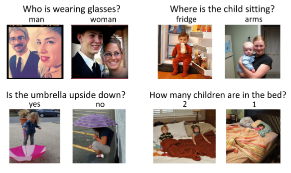

Ziqing Xia
About Me
I’m currently a Postdoctoral Research Scientist at MReaL Lab, Nanyang Technological University from 2022, working with Prof. Hanwang Zhang. I obtained my Ph.D. at Nanyang Technological University in 2022, advised by Prof. Hanwang Zhang as well. Prior to the Ph.D., I received B.E. degree in Computer Science from IEEE Pilot Class at Shanghai Jiao Tong University (SJTU) in 2015, and dual-master degree in Computer Science from the joint programme of SJTU and Waseda University in 2018, advised by Prof. Seiichiro Kamata and Prof. Lizhuang Ma.
My research mainly focuses on learning unbiased models against the distribution shift in computer vision, vision & language, incremental learning, noise identification, etc. As a previous game engineer, my lifelong dream is to (1) use machine learning to create something fun, (2) build interactive, personalized, and engaging NPC that can be used to enable an immersive virtual world.
News
- [Jul. 2022] xxxxx.
Selected Publications [Google Scholar]
-
 ECCV
European Conference on Computer Vision (ECCV), 2022.
ECCV
European Conference on Computer Vision (ECCV), 2022. -
 ECCV
European Conference on Computer Vision (ECCV), 2022.
ECCV
European Conference on Computer Vision (ECCV), 2022. -
 ECCV
European Conference on Computer Vision (ECCV), 2022.
ECCV
European Conference on Computer Vision (ECCV), 2022. -
 CVPR
IEEE Conference on Computer Vision and Pattern Recognition (CVPR), 2021.
CVPR
IEEE Conference on Computer Vision and Pattern Recognition (CVPR), 2021. -
 CVPR
IEEE Conference on Computer Vision and Pattern Recognition (CVPR), 2021.
CVPR
IEEE Conference on Computer Vision and Pattern Recognition (CVPR), 2021. -
 NeurIPS
Conference on Neural Information Processing Systems (NeurIPS), 2020.
NeurIPS
Conference on Neural Information Processing Systems (NeurIPS), 2020. -
 CVPR
IEEE Conference on Computer Vision and Pattern Recognition (CVPR), 2020.
CVPR
IEEE Conference on Computer Vision and Pattern Recognition (CVPR), 2020. -
 CVPR
IEEE Conference on Computer Vision and Pattern Recognition (CVPR), 2020.
CVPR
IEEE Conference on Computer Vision and Pattern Recognition (CVPR), 2020. -
 CVPR
IEEE Conference on Computer Vision and Pattern Recognition (CVPR), 2019.
CVPR
IEEE Conference on Computer Vision and Pattern Recognition (CVPR), 2019. -
 CVPR
IEEE Conference on Computer Vision and Pattern Recognition (CVPR), 2019.
CVPR
IEEE Conference on Computer Vision and Pattern Recognition (CVPR), 2019.
Awards
- Outstanding Reviewer (Top 10%), ICML, 2022
- 2021 Alibaba Outstanding Interns in Academic Cooperation, Alibaba Group, 2021
- 2021 & 2019 PREMIA Best Student Paper Award, 2nd Place, PREMIA, 2021 & 2019
- CVPR 2019 Best Paper Finalists, 2019
- Honorable Judge Award, The 5th Cloud Programming World Cup, FORUM8 Tokyo, 2017
- Waseda Partial Tuition-Waiver Scholarship for International Students (10/300), Waseda University, 2015
- IPS special scholarship for international students, Waseda University, 2014
- Monbukagakusho Honors Scholarship for International Students, JASSO, 2014
- Emerging Talent Award, The 1st Cloud Programming World Cup, FORUM8 Tokyo, 2013
Academic Services
Organizing Committees
Talks and Blogs
Paper Review
-
CVPR, ECCV, ICCV, WACV, NeurIPS, ICLR, ICML, AAAI, TPAMI
Projects
-
Scene Graph Benchmark in Pytorch (835 Github Stars)This project aims to provide a new codebase for Scene Graph Generation (SGG). It is built on top of the well-known maskrcnn-benchmark. Moreover, I included all the exsiting metrics: R@K, mR@K, ngR@K, zR@K, to benchmark the SGG.
-
Long-Tailed Recognition in Pytorch (516 Github Stars)This project provides a strong single-stage baseline for Long-Tailed Classification, Detection, and Instance Segmentation (under LVIS dataset). This project can be easily generalized to other tasks with unbalanced datasets.
-
VQA2.0 Recent Approachs 2018 in Pytorch (273 Github Stars)An open-source visual question answering (VQA) codebase built on top of the bottom-up-attention-vqa. It integrates several popular VQA papers published in 2018.
-
 Indie Game DevelopmentOut of interest, I independently developed several mobile games on Iphone. They have been downloaded over 10k times on Apple store in half a year.
Indie Game DevelopmentOut of interest, I independently developed several mobile games on Iphone. They have been downloaded over 10k times on Apple store in half a year.
Experience
Alibaba, DAMO Academy, Research Intern (2019.7 - 2021.11)
-
Major topic: Robust Machine Learning
Mentor: Mingyuan Tao, Chang Zhou, Jianqiang Huang
Tencent, AI Lab, Research Intern (2018.3 - 2018.6)
-
Major topic: Scene Graph Generation
Mentor: Wenhan Luo, Baoyuan Wu, Wei Liu
Mihoyo, Software Engineer Intern (2017.4 - 2017.12)
-
Mobile Game Development Using Unity 3D.
Toshiba, Research & Development Intern (2015.8 - 2015.9)
-
Major Project: Scenery Image Stitching and Inpainting.
Mentor: Kaoru Matsuoka
Speech Lab Intern, SJTU (2014.3 - 2014.9)
-
Major Project: Leading a team to develop an Android App for unlocking the screen by Voice Recognition.
Mentor: Kai Yu
28th ACM-MM Volunteer, Seattle, USA (2020.10)
-
Received Volunteer Appreciation Certification in the 2020 ACM Multimedia for joining the organization of online presentation.
YAPM Summer Volunteer, Yunnan Province, China (2014.7 - 2014.8)
-
Youth Ambassador Program for Minorities (TECC Organization) is determined to help the youth generation of minorities in remote area of China to inherit and protect their cultures.

Powered by Jekyll and Minimal Light theme.